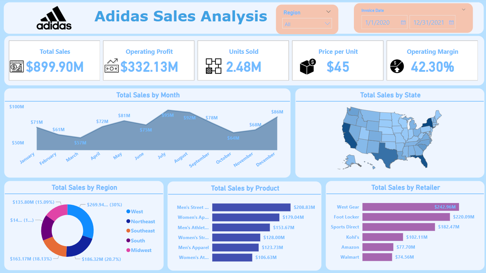
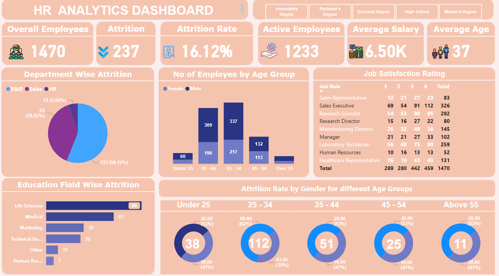

The Financial Report is a data analytics project designed to provide comprehensive insights into an organization’s
financial health. It analyzes key metrics such as revenue, expenses, profit margins, cash flow, and investment
performance. The report includes trend analysis, forecasting, and budgeting insights to support strategic planning. By
identifying cost-saving opportunities and revenue growth areas, it helps stakeholders make informed financial decisions,
ensuring transparency, compliance, and alignment with business objectives.


The Project Management Report is a comprehensive data analytics project designed to track and analyze project
performance metrics such as timelines, budgets, resource allocation, and task completion. It provides visual insights into
project progress, identifies bottlenecks, and evaluates team efficiency. The report supports decision-making by
highlighting potential risks and opportunities for improvement, ensuring projects stay on track and within scope. It aids
stakeholders in achieving strategic goals effectively.
N.B. Wait for a few moments to load the dashboard fully.

The Bank Loan Report is a data analytics project focused on analyzing and monitoring loan performance and trends. It
evaluates key metrics such as loan approval rates, repayment status, delinquency rates, customer demographics, and
loan types. The report provides insights into risk assessment, customer borrowing behavior, and portfolio performance.
By identifying trends and potential risks, the report helps financial institutions optimize lending strategies, improve loan
management processes, and enhance customer satisfaction while minimizing financial risk.

The Bank Credit Card Report is a data analytics project designed to analyze and monitor credit card performance and
usage trends. It evaluates metrics such as transaction volume, customer spending patterns, credit utilization,
delinquency rates, and customer segmentation. The report provides insights into customer preferences, risk assessment,
and revenue growth opportunities. By identifying trends and anomalies, it helps financial institutions improve marketing
strategies, manage credit risk, and enhance customer satisfaction for sustainable business growth.

The Inventory Management Report is a data analytics project focused on optimizing inventory processes by analyzing
stock levels, turnover rates, and order patterns. It tracks key metrics such as stock availability, demand forecasting, and
inventory costs. This report provides actionable insights to reduce overstock and stockouts, improve warehouse
efficiency, and support data-driven decision-making. It enables better resource allocation and ensures smooth
operations aligned with business objectives.

The Pizza Sales Report is a data analytics project designed to analyze and track the performance of pizza sales. It
examines key metrics such as sales revenue, order volume, customer preferences, and regional sales trends. The report
provides insights into top-selling pizza types, peak order times, and customer demographics. By leveraging these
insights, it helps pizza businesses optimize inventory, tailor marketing strategies, and enhance customer satisfaction,
leading to improved profitability and growth in a competitive market.

The Call Center Report is a data analytics project focused on improving customer service operations by analyzing key
performance indicators such as call volume, average handling time, customer satisfaction, and resolution rates. It
provides insights into agent performance, peak call times, and common customer concerns. The report helps identify
bottlenecks, optimize staffing, and enhance service quality. By leveraging data-driven strategies, it supports better
resource allocation and ensures efficient, customer-focused call center operations.

The Superstore Sales Report is a data analytics project aimed at analyzing sales performance across various product
categories in a superstore environment. It tracks key metrics such as sales revenue, transaction volume, customer
demographics, and product performance. The report identifies top-selling items, seasonal sales trends, and regional
performance, providing insights into customer behavior and preferences. By leveraging these findings, the report helps
optimize inventory management, marketing strategies, and overall sales growth.

The Adidas Sales Report is a data analytics project that focuses on analyzing sales performance for Adidas products. It
tracks key metrics such as sales volume, revenue, product popularity, customer demographics, and market trends. The
report identifies top-selling products, seasonal sales patterns, and regional performance, offering insights into customer
preferences and behavior. By leveraging these findings, the report helps Adidas optimize inventory, marketing
strategies, and overall sales efforts to drive growth and profitability.

The HR Report is a data analytics project aimed at enhancing workforce management by analyzing key metrics such as
employee performance, turnover rates, recruitment trends, and workforce diversity. It provides insights into employee
engagement, training effectiveness, and payroll efficiency. This report helps HR professionals identify areas for
improvement, streamline processes, and make informed decisions to align workforce strategies with organizational
goals, ensuring optimal employee satisfaction and productivity.

Description of the project 11.